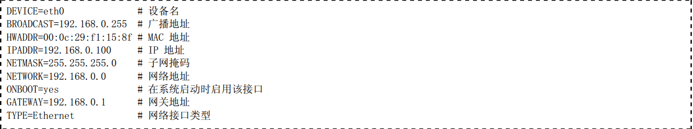
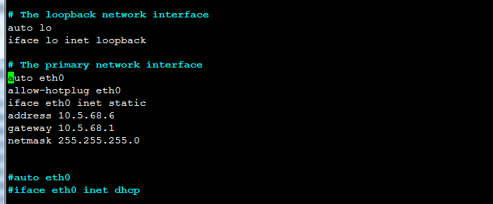

iconfig
命令格式
ifconfig <网络接口> <IP地址> [<netmask 子网掩码> <broadcast 广播地址>]
eg:ifconfig eth0 192.168.0.222
当IP地址使用标准A、B、C类地址时，广播地址和子网掩码可以省略，系统会自动判断广播地址和子网掩码的值并进行设置。否则必须指出广播地址和子网掩码
ifconfig eth0 10.0.0.222 Mask 255.255.255.0 Broadcast 10.0.0.255
1.1 给接口设置多个IP
ifconfig eth0:0 192.168.0.250
ifconfig eth1:0 192.168.1.3
ifconfig eth1:1 192.168.2.3
警告
使用 ifconfig 命令设置网络参数会立即生效，但不会修改网络接口配置文件，这将导致所配置的参数在重新启动系统后失效。
2、永久配置ipv4地址
2.1 Redhat系列操作系统
在 /etc/sysconfig/network-scripts 目录下存储网络接口配置文件。每个网络接口有各自的配置文件，配置文件以 ifcfg- 为前缀后接网络接口名。例如，接口 eth0 的配置文件名为 ifcfg-eth0 。 下面是 eth0 接口的配置文件。
您可以根据需要修改此配置文件 ifcfg-eth0 的配置。如果要设置 eth1 的配置文件，您可以复制 ifcfg-eth0 为ifcfg-eth1 然后做适当修改，如果要是为接口配置多个IP地址，可以将ifcfg-eth0拷贝成ifcfg-eth0:0 等， 然后做相应修改
警告
修改完成后记得要重启网络服务 service network restart
2.2 Debian系列操作系统
在/etc/network/interfaces文件中存储着各自接口的配置信息，下图是配置示意，可以根据具体环境设置

1、临时修改主机名
hostname xxxxx
或
echo xxxxx > /etc/hostname
或
hostname -F /etc/hostname
2、永久修改主机名
2.1 Redhat系列操作系统
编辑 /etc/sysconfig/network 文件中的如下配置行：
HOSTNAME=yourhostname
#将 yourhostname 修改为您的主机名。配置文件修改完毕，在下次重新启动时就会生效。
警告
不要忘记还需要修改 /etc/hosts 文件中的主机名。
1、修改DNS客户端配置文件
DNS 客户端配置文件为/etc/resolv.conf，使用如下命令添加 DNS 服务器解析的指向。
echo “nameverver 208.67.222.222” > /etc/resolv.conf
表示将DNS服务器设置为 208.67.222.222
2、修改 Hosts表 实现静态 DNS 解析
要实现域名解析，即可以使用 DNS 服务器，也可以使用 Hosts表。Hosts表 配置文件是/etc/hosts